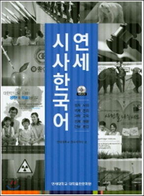
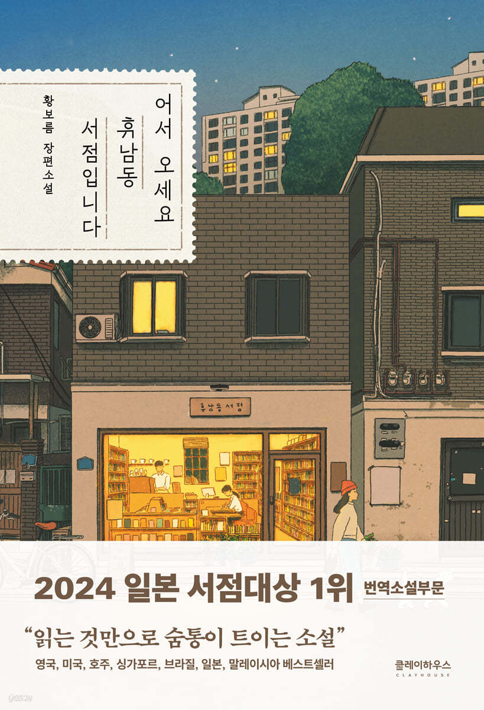
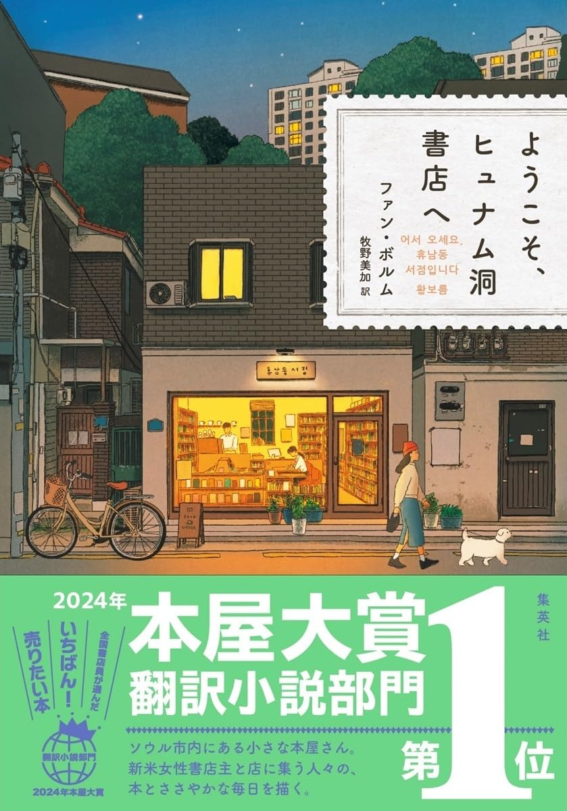

ミリネ重要レッスン
ミリネ重要レッスンのコンテンツ部分
会話力をグンとアップさせるための、会話トレーニングクラスです。
『会話トレーニング』
独学または授業で習った表現を会話トレーニングで話してみましょう！
韓国語をしゃべってはいるけれど。。。いつも同じ単語、同じ文型だけで話していませんか？
会話のレベルは、単にたくさんしゃべることだけでは伸びません。知ってる表現だけではなく、より多くの正確な表現を使う練習が必要です。
ミリネ韓国語教室では皆さんが、より多くの語彙と的確な文型を使って、様々な分野の会話が出来るように「会話トレーニングレッスン」を開講しております。
ミリネ独自のテキストを利用し、毎回違うテーマについて指定された文型を使って作文・添削・繰り返し話す練習をしながら文型を身につけます。
➊ ミリネ独自のテキストを使用
事前にテキストをお渡ししますので、指定された文型で作文をしてきてください。添削・文型を使った会話の練習をします。
➋ 単なるお喋りとは違う！
事前に作文を書いていただきます。授業中に作文の間違いを確認することで似ている文型との違いを学びます。
多様な文型を使って、自ら作文して話すことで、会話のレベルが上がります。
❸ 初めての方も気軽に参加できる！
体験レッスン(1,500円)でご参加できます。
『詳細』
対象
会話クラス
時間
| 人数 | 時間 |
|---|---|
| 1～5人 | 50分 |
日程
中級 : 水 11:00~12:00 対面
中上級: 土 14:00~15:00 オンライン
目標
韓国語で不自由なく話せること
テキスト
ミリネ独自のテキスト
進め方
➊ 本日のテーマをまず確認する
➋ あたらしい単語や表現を読んでいただき、発音チェックを入れる
➌ 準備してきた内容で会話をする。随時表現を直す
➍ 最後に本日のテーマで学んだことをまとめる
内容
| 初中級 | 中級1 | 中級2 | 上級 | |
|---|---|---|---|---|
| 1 | 初対面の挨拶、自己紹介 | 韓国語の勉強 | 일기 예보 | 연하 남친 |
| 2 | 余暇、趣味 | 私について | 문병 | 여동생이 알코올 중독 |
| 3 | 約束 | 夢 | 부동산 | 6살 차이 나는 특이한 성격의 남자친구 어떻게 해야 하니 |
| 4 | 季節 | 熱中 | 주거환경 | 남자친구 어머니가 돈을 빌려 |
| 5 | 私の日課 | 私だけの一日 | 은행 | 황혼 육아비 지원 반대 |
| 6 | ストレス解消法 | 私のこと | 세탁소 | 양육비 문제 |
| 7 | 家族 | 食事、料理 | 미용실 | 기러기아빠의바람 |
| 8 | 旅行 | スポーツ、運動 | 약속 | 결혼 관련 다툼 |
| 9 | 公演 | 結婚式、結婚文化 | 대중교통 | 사장 가족이 직원 |
| 10 | 友達 | 気分転換 | 이사 | 20대 여성 엄마가 모아둔 돈을 못 쓰게 해요 |
| 11 | ダイエットと健康管理 | 特別な日 | 나들이 준비 | 마누라에 대한 불만 |
| 12 | インテリア | 忘れ症 | 테마파크, 놀이공원 | 고양이를 싫어하는 누나 |
| 13 | 食品 | 休暇 | 명절(설) | 무당 친척 |
| 14 | 同好会、集り | インターネット、SNS | 말다툼 | 동생이 내 옷을 입어요 |
| 15 | 試験 | 人間関係 | 사진관 | 재테크 남에게 맡겨도 되나요? |
| 16 | 健康、長寿 | ショッピング | 요리 | 엄마 빚이 나에게… |
| 17 | ニュース | 子、子供 | 여행 | 버릇없는 요즘 아이들 |
| 18 | 習慣 | 読書 | 기념일/공휴일 | 직장 내 성희롱 |
| 19 | 整形手術 | 天気/季節や気分 | 우체국 | 수습기간 후 임금인상 |
| 20 | 就職 | 自己啓発 | 서점 | 여자 상사 인정 받기 힘들어 |
| 21 | プレゼント | 私の家 | 전화 | 야근을 강요하는 회사 |
| 22 | 韓国、韓国人 | 工芸、手芸、作り | 길안내 | 무대포 아줌마, 여자들이 문제 |
| 23 | 料理 | 結婚について | 식당(주문) | 지방대학의 설움 |
| 24 | 流行 | 映画 | 쓰레기 문제 | 신경질적인 엄마 |
| 25 | 理想 | スマートフォン | 뉴스 | 회사에서 할 일이 없어요. |
| 26 | ドラマ | 旅行の際、重要に考えること | 맞선, 미팅, 첫만남 | 편의점 알바 짜증나요 |
| 27 | 思い出 | 海外旅行 | 남녀평등 | 폐지 줍는 노인들 위험천만 |
| 28 | 服 | 節句 | 질병 | 쿠폰 사용하면 쪼잔한 사람? |
| 29 | 好きな食材と食べ方 | 美容 | 현대문명(인터넷, 휴대폰) | 지하철 백팩은 민폐? 그 밖의 지하철 매너들 |
| 30 | 恐ろしかった出来事について | 祭り | 다이어트 | 신종 사기 수법 |
| 31 | デリバリー | 卒業と入学 | 고령화 및 저출산 | 버스 안에서 노래 부르는 가족. 아이 있으면 다 용서되나? |
| 32 | 癖 | ひとりご飯、一人飲み | 직업과 적성 | 초등학교 1학년 체벌문제 |
| 33 | 占い、運勢 | 後悔したこと | 명절(추석) | 투병 중인 딸이 부모님 회사를 물려받아야 할까? |
| 34 | 公序 | 家探し、不動産 | 사고방식/성격 | 지하철 성추행범 |
| 35 | 私の生涯で最も悲しかったこと | 奇妙な経験 | 수수께끼 | 매너 없는 진상 고객들 |
| 36 | 血液型 | 私だけの楽しみ | 가전제품이용 | 옆집 사람이 알코올중독 |
| 37 | ペット | 私の町と近所 | 고장 및 수리 | 운전매너에 대해 |
| 38 | ニックネーム | セクハラ、男女差別 | 복권 당첨 | 전통시장 이러니까 망하지. |
| 39 | 宝くじ | 気持ち良いニュース | 편지(이메일) | 박리다매 가게 때문에 자영업자가 죽는다 |
| 40 | 私が知っている面白い/怖い話 | 流行 | 위인전(임꺽정) | 당신에겐 반려견, 남에게는 민폐? |
| 41 | 化粧、メイクアップ | 公共場所での喫煙 | 취미 활동 | 전업주부는 육아도 가사의 일부다 |
| 42 | 老後設計 | 健康のための習慣 | 서울이야기 | 전통시장도 못 믿어 |
| 43 | お風呂の文化 | アナログとデジタル | 옛날 이야기(단군신화) | 가족 같은 회사? |
| 44 | 私の故郷、私の近所 | ファッション、身なり | 결혼 문화 | 28살 백수 어떻게 살아야 할까요? |
| 45 | 生まれ変わったら | 宗教 | 장례식 | 40대 맞벌이 부부 소비패턴 봐 주세요 |
| 46 | 環境汚染 | 人生のターニングポイント | 입학식/졸업식 | 마트에서 돌아다니는 아이 괜찮아요? |
| 47 | 節約 | 引退、退職後 | TV 극본 <이 겨울에 당신과 하고 싶은 일> | 서울 살이 옳은가요? |
| 48 | インターネット、デジタル | グルメ | 결혼식 | 층간 소음 문제 |
| 49 | 地震などの災害、災難 | 不倫、浮気 | 회사 | 육아 문제로 언니와 사이 틀어져 |
| 50 | 私が尊敬する人 | 単身赴任 | 접대 | 해외 근무 계속해야 하나? |
入学金
9,800円
授業料
初めての方も気軽に参加できる！
| 1回当たり | 回数 | 授業料(税抜) | 税込 | 有効期限 |
|---|---|---|---|---|
| 2,980円(月4回) | 12回 | 35,760円 | 39,237円 | 3ヶ月 |
| 3,500円(月3回) | 9回 | 31,500円 | 34,650円 |
■ 回数券の場合、予約は1週間前までにお願いします。一度予約したらキャンセルできませんので、予めご了承ください。
お一人でもスタート可能。
| 1回当たり | 回数 | 授業料(税抜) | 税込 | 有効期限 |
|---|---|---|---|---|
| 3,800円(月4回) | 12回 | 48,000円 | 52,800円 | 3ヶ月 |
| 4,300円(月3回) | 9回 | 40,500円 | 44,550円 |
■ 途中でグループレッスンに変更する場合、差額は返金か、次回のレッスン代に使えます。
生徒の声
2017.07.29|会話トレニンーグ感想文
| S様 |
|
途中からこの教科書を使い始めたので全ては見れていませんが、 様々なテーマがあったので楽しいことができました。 ただ、時々テーマによっては話すことがあまりなくて困るときもありました。 例えば、郵便局。 次回から、実際にあった悩み相談ということで、より口語的、一般の人々の話し方 (書き方）も見れるのかなと思うと楽しみです。 (2017.7.29) |
| O様 |
|
보통 교과서에서는 배울 수 없는 내용이 많아서 재미있었어요. 실제로 쓸 수 있는 표현도 많고 수업 후에 바로 친구에게 그 표현을 썼어요. 문형을 써서 문장을 만드는 것이 어렵고 시간이 걸렸는데, 결과적으로 TOPIK 시험에 아주 도움이 됐어요. 선생님들의 이야기도 매주 재미있고 만족스러운 수업 이었어요. 감사합니다. (2017.7.29) |
| K様 |
|
例文を作る時に文法が良く分からない時（ここでどういう意味で使えば良いか）があった。 内容が日常生活にあまり結びがつかず話が難しい題があった。 教科書の印刷がおかしく、ページが変になって使いにくかった。 (2017.7.29) |
| S様 |
|
途中からこの教科書を使い始めたので全ては見れていませんが、
様々なテーマがあったので楽しいことができました。
ただ、時々テーマによっては話すことがあまりなくて困るときもありました。
例えば、郵便局。
次回から、実際にあった悩み相談ということで、より口語的、一般の人々の話し方
(書き方）も見れるのかなと思うと楽しみです。
(2017.7.29) |
| M様 |
| この会話トレーニングを受けて、自分から韓国語で発言する自身が持てるようになりました。 フリートーキングと違い毎回話すテーマが変わり、今まで自分が知っている単語や、自分に関心がある話しか出来ませんでしたがこのトレーニングを受けてから話す内容が広がりました。 |
| S様 |
|
１．会話トレーニングを受けた感想をお願いします。 －３ヶ月間でしたが、素晴らしい先生と優秀なメンバーと一緒に授業を受け、楽しく、またとても刺激になりました。毎週の主題が身近なことなので、考えた事、話したことが今後も使えてよいと思いました。 ２．会話トレーニングで勉強されて、以前と変わったところや進展がありましたか？あれば詳しく教えてください。 －会話を上達させたくて始めたのが、会話はもちろん作文も（少しずつですが）良くなってきたと思います。 ３．いろいろなレッスンの中、会話トレーニングレッスンを選択した理由を教えてください。 －話す機会をたくさん持ちたかったため。 ４．会話トレーニングの進め方について。 －いろいろとみなさんとお話した後、作文も見てもらえてよかったです。 ５．改善してほしいところはありますか。 －先生によっては主題に関した単語をたくさん提示してくださったので、ほかの先生もそうしていただければよりよいと思います。 ６．ミリネで勉強しようと思ったきっかけは？ －会話を中心にした授業を受けたくて、いろいろ探したところ、リーズナブルな料金で個人レッスンを行っているミリネを見つけました。自分がやりたい授業にアレンジしていただけると聞いて決めました。 ７．これからの目標を教えてください。 －韓国ドラマ８０％理解と旅行の時のスムーズな会話を出来る様にがんばります。 |
『音読クラス』
A: 田中さんは韓国語をどれぐらい勉強しましたか。
B: 6年ぐらい勉強しましたが、未だに中級で伸び悩んでいます。
A: 学習の中で何が一番のお悩みですか。
B: 初級時は意欲もあり、単語もよく覚えられましたが、中級へ上がったら、語彙や表現があまりにもたくさん出てきて、全て覚えることが難しく、伸び悩んでおります。
A: 勉強時間はどのぐらいになりますか。
B: 毎日ではないですが、二日に一回は勉強しています。
田中さんは真面目な方で、勉強する時間も他の方より多いのに関わらず、初中級から抜け出せないケースでした。
二日に一回勉強する時間を作るのというのは、平均よりもはるかに勉強する時間が多いのに、果たして何が問題なのでしょうか。
彼女の勉強方法を聞いてみると、カフェで2時間ほど座って黙読し、訳をノートに書きながら単語を覚えていくという方法でした。
また帰り道や電車に乗っているとき、韓国語CDを聞いてもいました。
ここで皆さんはどんな問題点を発見しましたか。
よく語学をスポーツに喩えます。スポーツは他の分野とは違って努力によって結果がついてきます。
もちろん、才能とセンスがある人もいますが、それに加えて反復的なトレーニングをしなければよい成果をあげることはできません。
反復的な学習を通じて体に馴染ませていくのが何より重要だと言えます。 しかし、反復学習にもかかわらず、伸びない理由は何でしょうか。
多くの学習者たちの共通の悩みは、単語や表現がよく覚えられないこと、そして覚えても忘れてしまい、会話まで繋いでいけないことです。
黙読は、半分しかできてない勉強法です。全部知っていると考えて、全部覚えたと思っても、1日、2日経ち、1週間、1ヵ月後には結局、記憶に残るのは10%も達しないと言います。
たとえ一生懸命勉強していても、音読の習慣が全くない状態では頭の中に残るのは努力と比例しない結果となります。
音読の重要性を認識していても、音読練習は、正確な発音で学習しなければ、むしろ間違った発音に慣れてしまうという逆効果が生じる恐れもあります。
専門講師に発音チェックを受けた上で、音読の習慣をつければ、綺麗な韓国語を習得できるだけでなく、
難なくレベルアップすることができます。
★レッスンのポイント★
➊ 毎授業ごとに発音、抑揚、話すスピードをチェックします。
➋ 正しい抑揚及び発音をイメージトレーニングします。
❸ 会話の際にもう1度チェックし、より自然な会話を定着します。
音読の効果
➊ 覚えようとしなくても自然に覚えられる。
➋ 書きながら覚えるより結果的に長く記憶に残る。
❸ 発声練習であるため、会話につながりやすい。
❹ イメージトレーニングをすることで、状況に適切な表現を使うことができる。
音読クラスの 流れ
➊ 音読記録シート作ります。
➋ 文章の意味、文法要素、音の変化を把握します。
❸ 音声を聞きます。
❹ オーバーラッピング
❺ シャド―イング
❻ イメージトレーニング
詳細
クラス
初中級
定員
2人～5人
日程
[日曜クラス] 11時～12時
募集期間
10月クラス、現在募集中
目標
➊すらすら韓国語文章を読むこと
➋ネイティブに近い発音と抑揚を学ぶこと
➌会話に自信をつけること
➍韓国語で不自由なくしゃべること
テキスト
【初中級】
韓国語リーディング タングニの日本生活記

授業料
| 曜日 | 時間(50分) | 教室 | 1コマあたり | 授業料(税抜) | 授業料(税込) |
|---|---|---|---|---|---|
| 日 | 11時～12時 | オンライン | 2,980円 x 1コマ x 10回 | 29,800円 | 32,780円 |
体験レッスン
一日体験レッスンも可能です。フォームよりお申し込みください。
※体験レッスン料：2,980円+税=3,278円(税込)
生徒の声
2018.11|音読クラス感想| Y様｜2018.11月 |
|
今までのどの授業よりも大変（つらい）な経験をしました。通常の個人レッスンの予習や復習やパダスギだけでもいっぱいいっぱいなところに音読クラスが加わったためです。 しかし大変だった反面、どのクラスよりも集中した時間でした。人前より先生方にきちんと発音できてこそ、聞き取ることができるという意味がとてもよくわかりました。確かにパダスギで今まで聞き取れなか細かいところが聞き取れるようになったことは大きな進歩だったと思います。 そして今まで苦手としていた音読が少し好きになりました。今日までの経験を活かして声に出してたくさん音読練習をしたいと思います。 |
| O様｜2018.11月 |
|
間違いに対して妥協することなく、チェックを入れて下さることがとてもありがたく感じました。完璧への道はまだまだ遠いですが、これからも得た知識を積み上げてきれいな音読を心がけます。 発音・抑揚などについて成績表などで数値化してフィードバックしてくださると励みになると思います。サンプル音声も「音読」に特化したものがあるといいと思います。（受講生だけが聴けるように） |
| M様｜2018.2月 |
|
音読クラスは初めて受けました。 今までほぼ独学で勉強してきたので発音の事はあまりわかっていませんでした。 今回10回コースを受講して'目からウロコ'のものがたくさんあり、遠くまで通ってきた甲斐がありました。 先生方も発音に関してはベテランの方ばかりで大きい김先生は日本に来てから韓国の発音の勉強をした…とか言っていた様な。 それほど、人に教えるのに再度勉強するほど熱心な先生で、ここで音読を教えていただいて本当によかったです。 TOPIKが終わってからも少しづつ、又受講したいなと思っております。 |
| K様｜2018.2月 |
|
途中からの講義の参加でしたが、今までどれほど知らないことが多かったかが、よくわかりました。 "なんとなく"で発音していたことの間違いに気付けたことが大きかったです。 しかし、身につくには時間が足りなかったです。 "抑揚"に意識が向くようになり、TVなどで日本語が上手な韓国人が韓国語の"抑揚"で日本語を話していることもわかりました。 |
| A様｜2018.2月 |
|
今までイントネーションの法則は韓国語にないと思っていましたが、このクラスで本当に多くの法則を教えて頂き、驚きの連続でした。 今まで 지방 사람이세요? 경상도에서 오셨어요?と何度も言われてきた理由がわかりました。 独学で勉強していると、自分のまちがったところを指摘してくれる人もいないし、友達も特に何も言ってくれないので、 このクラスで自分が今までまちがっていたところを指摘してもらい、今後学習していく中での新たな目標ができ、 とても良いモチベーションとなりました。本を読む時は意識できるようになりましたが、友だちと会話する時は元に戻ってしまうので、それを直していくのがこれからの課題です。 すっごく良い経験になりました。 もう終わりなのが淋しいです。 |
『2025年11月発音・抑揚・音読トレーニング集中講座』
| 特徴 |
|---|
| ❶ 「日本語ネイティブがやりがちな韓国語発音」を徹底的に攻略します。 |
| ❷ 韓国語の音が口の中のどの部分に影響して出るのかなどを体系的に学習し、発音変化を単純な暗記ではなく論理的に理解します。 |
| ❸ 日本語ネイティブにとって難しい発音の入っている文章を読み、流暢に話せるようにします。 |
| ❹ より韓国語ネイティブに近い抑揚で話せるように練習し、自然な韓国語を使いこなせるようにします。 |
この発音はきちんと区別して言えますか？
| 母音 | 저금, 조금 / 널다, 놀다 |
|---|---|
| パッチム | 고향, 공항 / 꼭, 꽃 |
| 鼻音 | 곰, 공 / 상담, 상당 / 장난, 장남 |
| 鼻音+母音 | 반성, 반송, 방송 |
| パッチム 有無し | 나르다, 날다 / 다르다, 달다 |
| 農音 vs 激音 | 특기, 특히 / 식구, 식후 |
詳細
| 授業について | 外国語を学びながら一番難しく感じるのは発音と抑揚ではないしょうか。 初級の段階で最初にきちんと発音を学ぶと後が楽です。また中級や上級になった時に自分の発音が果たして正確なのかに気を使えるようになります。 そこで、「日本語ネイティブがやりがちな韓国語発音」テキストを使い、徹底的に練習します。 韓国語は発音変化の多い言語、発音のルールを正確に理解することが発音矯正の第一歩を踏み出すことになります。 母音とパッチム、発音変化を正確に学び、さらにネイティブの抑揚を習得すると皆さんの韓国語がより自然になり、またドラマや映画の聞き取りがずっとできるようになるでしょう。 たった1日の投資で、皆さんの発音と抑揚についての悩みが解決します。 |
|---|---|
| 対象 | 発音の基礎をやり直し方
的確な発音で話したい方 より韓国人らしく話したい方 |
| 目標 | ➊ 発音のルールをきちんと理解します。 ➋ 正しい発音と抑揚で、より流暢に話すようにします。 ➌ ネイティブの発音を身に付けます。 |
| 授業の流れ | ❶ 授業前に資料はお送りします。 ❷ 事前にテキストを読んで、わからない単語などは前もって調べておいてください。 ❸ 授業中に講師が発音の仕方や日本語母語者の間違えやすい発音を教えます。 ❹ 受講生の発音から問題点をピックアップし、正しい発音と抑揚を解説します。 |
| 日程 |
中級: 12時～14時 (各50分×4コマ) 教室 上級: 15時～17時 (各50分×4コマ) 教室 |
| 定員 | 2～8人 |
| 教室 | 新宿教室 |
| 募集期間 | ～11/20(木) | テキスト | ミリネ独自の発音テキスト |
内容
日本語ネイティブやりがちな韓国語の発音を直して、流暢になる！
| レベル | 時間 | 11/22 (土) | 11/23（日） |
|---|---|---|---|
| 中級 (対面) |
12時 | 似ている発音を徹底的に比較・練習し、区別ができるようにする➊ | 短文音読課題の発音やイントネーションの癖を、直す |
| 13時 | 似ている発音を徹底的に比較・練習し、区別ができるようにする➋ | 長文音読課題の発音やイントネーションの癖を、直す | |
| 上級 (対面) |
15時 | 似ている発音を徹底的に比較・練習し、区別ができるようにする➊ | 長文音読課題の発音やイントネーションの癖を、直す |
| 16時 | 似ている発音を徹底的に比較・練習し、区別ができるようにする➋ | 多読教材を使って音読練習と発音矯正をする |
授業料
| 期間 | コマ数 | 授業料(税抜) | 税込 |
|---|---|---|---|
| 1日間 | 2コマ | 1コマ 3,280円 x 2 = 6,560円 | 7,216円 |
| 2日間 | ４コマ | 1コマ 2,980円 x 4 = 11,920円 | 13,112円 |
生徒の声
2021.11|発音・抑揚クラス
| 初級|中部在住 |
| 良かった点 実際に口や舌の動きを見ることができ、自分で勉強するだけでは気づかなかったことを知ることができました。自信のない発音はやはり伝わらないことも実感でき、改めて発音の大切さを学びました。 先生のお人柄も良く、失敗しても自信を失わせないよう丁寧なご指導を頂けて感謝いっぱいです。何より楽しく受講できたことが、より一層やる気を持たせてもらい、次へのモチベーションに繋がりました。 悪かった点 授業についてではなく、自分自身の問題で、 予習をしたつもりでしたが、足りていなかったと痛感し、もっと深めてから受講すれば更によかった気がしています。 私には3時間では足りないくらいの勉強量だったので、もっと掘り下げて学べたら良かったと思いました。 |
| 初級| 関東在住 |
| 初めてだったので緊張しましたが、先生も生徒の皆さんも和やかで温かい雰囲気の中で学ぶことができてよかったです。激音や母音など自分の弱点をフィードバックしていただき、独学ではなかなか気づけなかった部分なので非常にありがたかったです。これからの勉強に役立てていきたいと思います。 |
| 中級| 関東在住 |
| 自分のぶつ切りの読み方の特徴が自覚できてよかった。できていない発音に関しての改善点の説明も具体的でわかりやすかったです。 |
| 中級| 関東在住 |
| 自分のぶつ切りの読み方の特徴が自覚できてよかった。できていない発音に関しての改善点の説明も具体的でわかりやすかったです。 |
| 上級| 近畿在住 |
| 自分では気づきにくいことも指摘してくださったのでそこを中心になおします。 |
| 上級| 関東在住 |
| 一つ一つは、発音は出来ますが文章になるとなかなか意識しないと出来ないです。抑揚は日本語と違うことが最近は良く分かるようになりました。エッセイと小説は訳文をもう少し丁寧に教えてもらったら良かったと思います。 |
2021.03|発音・抑揚クラス
| 中級｜関東在住 |
| 先生がほとんど韓国語で授業をしてくださったので、それを理解しながらだったことはとても刺激的でした。自分の発音の癖も分かりやすく指摘してもらえたことも良かったです。 |
| 中級｜関東在住 |
| 事前課題などで、目標をしっかり定めて勉強できてよかったです。先生の進め方には無駄がなく、オンラインでの授業時間が有効に使えてありがたかったです。場合によっては、指された人以外はミュートにするなども今後検討いただければと思います。まあ、なんとかなりましたが、途中、ご家族と会話が始まってしまい、気になさらずにいた方にどうしようと思った場面がありました。でも、切り替え時間も惜しいという部分もあると思いますので、ケースバイケースとも言えると思うのですが。 |
| 上級｜関東在住 |
| 受講生が少なく、音読の悪い点を細かく指摘していただけたので大変ありがたかったです。普段、抑揚に気をつけながら練習しているつもりでも、ちゃんとできていなかったんだな、と改めて反省しました。先生の説明もわかりやすく簡潔で、勉強になりました。また、参加したいと思います。 |
| 中・上級｜関東在住 |
| 항상 발음이나 억양은 중요하다고 생각해서 들었어요 수업 내용은 거의 지금까지 배우던 일이지만 확인할 수 있어서 좋고 새로운 벌견도 있어서 공부에 도움이 됐습니다! 연음화는 좀처럼 못 하지만 연음화를 못 하니까 알아듣기도 못 한다는 걸 알았어요 전 원어민 아니니까 완전히는 무리예요 그저그러면 괜찮지만 앞으로도 되도록 선생님 처럼 원어민에게 가까워지도록 노력하겠습니다! |
2020.11|発音・抑揚クラス
| 初中級｜関東在住 |
| 少人数のため一人一人発音チェックして直してもらえてコツが掴めました。単発でしたが盛り沢山の充実の内容でした。オンラインというのも楽で良いです。とすぐに忘れてしまうことも自分で反復できるように助けてくれるお教室だと感じました。 |
| 初中級｜関東在住 |
| 添削チェックを丁寧にしてくれ、グループだけど自分が話す機会も多くて良かったです。授業の最後に質問タイムや、メールで授業後に質問を受け付けてくれる機会があれば良かったなと思いました。 |
| 初中級｜関東在住 |
| 今まで分からなかった音の違いが少し理解出来、聞き取れるようになりました。韓国語の勉強を始めたばかりの自分には例文が文法的に少し難しく感じましたが、とても良い時間になりました。もっと勉強してから、中級上級としてもう一度参加したいです。 |
| 初中級｜中部在住 |
| 癖になっている発音を指摘してもらえ、自分の間違いに気付くことができました。他の方の発音を聞くこともでき、自分と比較したり良い勉強になりました。 |
| 中級｜関東在住 |
| まず、ほぼ韓国語による授業が嬉しかったです。それだけで耳と脳が一生懸命韓国語を聞こうとしている感じがしました。
また初日、平音激音濃音から丁寧に教えていただけたのがよかったです。ハングルを覚えた頃は独学で、今まで自分ではまあまあできている、と思っていたのがそうではないとわかりとても勉強になりました。 ２日目の授業も、抑揚を中心に細かい点まで指摘してくださりありがとうございました。たぶん、発音や抑揚をこんなに意識して音読したことはありません。 また授業動画などをあとで送っていただけたのが大変ありがたいです。 時間が足りなくなるので難しいかもしれませんが、先生に指摘していただいたあと、もう一度通して読んで聞いていただくフィードバックの時間があるともっといいかなと思いました。 |
| 上級｜関東在住 |
| 人数も少なく、細かいところまでチェックして頂けて大変良かったです。自分の癖や弱点をを知る事が出来たのと、気を付けるポイントを知る事が出来ました。ありがとうございました。 |
| 上級｜東北在住 |
| 改善点を指摘してもらえたので大変よかったです。 |
2020.05|発音・抑揚クラス
| ミリネを初めて受講し、オンラインでの授業も初めてだったが、ものすごく良かったです。 自分の分かってないところを知れただけでなく、変な癖がついていたり苦手な発音部分を、とても客観的かつ体系的に学べました。 また、授業のファイルをいただけるのもとても良くて、 その場限りだとすぐに忘れてしまうことも自分で反復できるように助けてくれるお教室だと感じました。 |
| 今まで抑揚について学んだことがなかったので、どこを下げてどこを上げるのかを学べて感動でした！非常に分かりやすかったです。 |
|
発音、抑揚について基本＋ガッツリでしっかり学ぶことができました。 テキストの音源や動画などで韓国語の抑揚を真似て発音するようにしていましたが、 基本的なルール（平音は低く、文節末は高く、など）を初めて知り、理解が進みました。 知っている単語、文章を発音するのは慣れてきましたが、ガッツリの最後にやった初見の文章を読む課題はとても難しく感じました。 もっと練習していきたいです。 自分の発音について、ネイティブの先生にチェックしていただけるのはとてもよかったです。 欲を言えば、もっと自分の発音をチェック、矯正していただく時間があればよかったです。 （人数とコストを考えると難しいとは思います＾＾；） また、かなり久しぶりの韓国語レッスンだったこと、もともと文法メインの学習で会話練習をしてこなかったので、 授業前後の先生との会話にちゃんと答えられなくて残念でした。発音とともに語彙、会話力も強化する必要を感じました。 これからも頑張ろうとエネルギーをもらえる授業でした。ありがとうございました！ |
| 中上級 |
| 連音化について、説明があれば良かったです |
| 中上級 |
| 今まで曖昧だった抑揚の基本が分かり、とても良かった。 |
| 中上級 |
|
先生が明るくて、離される韓国語もはっきりしていて聞くのが楽しかった。 今まで思っていた으の発音や、激音、濃音、ㅅ ㅎ は高く読むなどの知識が違っていたことがわかった。 もっと練習して、自然な韓国語を話したい。 |
| 中上級 |
|
実際に声に出して読みの練習をできたのが良かった。特に、長めの文章を読み方を学べたことが、よかった。 これまでも、韓国語の抑揚に関する書籍やYoutubeなどをいろいろ見てきたが、 今回のような長めの文章に挑戦する抑揚講座というのは、実は、あまり多くないと思う。 その点で、とても勉強になった。 教え方としては、先生が細かく丁寧に説明してくださるので、わかりやすかった。 受講生ごとに抑揚を直していただける時間もあって、自分のクセを知ることができた。 |
| 中上級 |
|
今までアクセントに関して、ちゃんと学んだことも考えたこともなかったので、今回の授業はとても新鮮でした。 実際に韓国人の話す韓国語を聞くと、教えてもらった通りに話していて、 今まで知らずに話していた自分が少し恥ずかしくなりました。 今回の授業だけでなく、今後も活かせるようにしたいです。 |
| 中上級 |
| 時間が合わなくていきなり中上級クラスを受けたので私にはレベル高すぎたのですが、とても勉強になりました！！ |
2019.12|発音・抑揚クラス
| N様|初級 |
|
とってもわかりやすかったです。日本人が間違いやすい抑揚の比較がとてもよかったです。抑揚の授業の時間がもうちょっと多くあるとうれしいです。 先生の授業はとってもわかりやすいのでまた機会があったら受講したいと思います。今回もありがとうございました。 |
| T様|初級 |
|
これまで発音のことで疑問に思っていたことが解決されました。抑揚に気を付けることで苦手な激音や濃音もそれらしく聞こえることを学べたのは嬉しかったです。 ひとつの単語では発音できても文章になるとできないことが多いので、文を読んで発音を修正していただけるクラスがあったら受けたいです。 （先生がおっしゃっていたように文法が分からないときれいに読めないと思うので文法の説明も聞きたいです） |
| K様|初級 |
|
とてもわかりやすかったです。特に鼻音化、流音化、濃音化、激音化はずっと疑問だったのでやっと理解しました。 テキスト以外の例文もいくつか教えて頂き良かったです。まだ文法もしっかり習っていなくても理解できる授業だったのでありがたかったです。短い期間でしたがありがとうございました。 （ギックリ腰の時は振替授業して頂き助かりました。本当にありがとうございました。） |
2018.12|発音・抑揚クラス
| I様|中上級 |
|
私の実力では、ついていくのが大変でしたが、とても中身の濃い授業が受けられてありがたかったです。 発音に苦労しました。ㄴ,ㅇなど長くくせがついてしまったのを直すのが難しかったですがていねいに1つ1つ直していただき感謝しています。レベルの高い人達と一緒で緊張しましたが楽しかったです。 私は聞き取りがにがてなので、音読（中級）に今度参加してみたいなあと考え中です。 |
| K様|中上級 |
|
発音の授業を受けたのが初めてだったので、今まで自分で気づいてなかった部分をたくさん知ることができてとても勉強になりました。 これからも練習を続けて、少しでもネイティブに近づけるように頑張っていきたいと思います。 |
| Y様|中上級 |
|
4日間の発音クラスとても楽しかったです。最後の音読をたくさんした日は少し緊張しましたが、とてもよい勉強になりました。 足りない部分をたくさんして下さってことも私にとってもとてもよかったと思います。 |
| T様|中上級 |
|
頭で分かっていても適当に発音していることがあらためて分かりました。口の中、唇の運動が多くあって、きちんと発音しようとすると、かなりの運動量です。 これからは意識して発音に注意していかねばと反省。 |
2018.12|発音・抑揚クラス
| D様|初級 |
|
4週間、ありがとうございました。 先生の発音がわかりやすいので 바と빠 の」違いは少し聞こえるようになった気がします。 まだ、普通に読むのも時間がかかるので 発音通りに読める練習をしていきたいと思います。 参加して良かったです。 ありがとうございました。 감사합니다. |
| N様|初級 |
|
自分で CDをきいてまねするのと違って 実際に先生にコツを聞きながら学べて前よりも発音の要所が 理解できたような気がしました。 4週間分かりやすく教えて下さってありがとうございました。 |
| G様|初級 |
|
今までキチンと「発音」だけの授業を受けたことがなかったので 「思い込み」がたくさんあったことに気づけてよかったです。 特に文章になったとき、ひとつひとつにとらわれないで「ひとつの意味で見る」 ということに、今まで「ただ単語を追いかけて」読んでいたこともわかりました。 (면접 준비 때문에, [때]をやたら高く読むくせがついてました。） ようやくちょっと慣れたかな？ 何度も練習しないとだめだなーと思いました。 |
| G様|初級 |
|
四週間、1日2時間の内容は濃くて すぐに習得するのは無理だから これから毎日、発音するようにしたいです。 発音の変化（濃音になる）ところが今まで よくわからなかったけど今回受講して単語が変化することに気づくことができました。 まだまだ慣れないので、繰り返し復習します。 あと、複合母音にもなれて前より読みやすくなったと思います。 ありがとうございました。 |
| T様|初級 |
|
勉強を始めて6ヶ月で参加はかなり難しいものでした。 是非入門編を開設してほしいです。 やはり原則を先に学ぶことが非常に重要なことでもあり、成果（今の）は別として満足してあります。1か月苦しかったですが、先生の熱心な講義はありがたかったです。 ありがとうございました。 |
2017.10|発音・抑揚クラス
| T様｜2017年4週コース｜土曜講座 |
|
今までなとなく発音していたのですが一ヶ月レッスンを受けてからは抑揚やリズムを意識して発音するようにしています。 毎日音読をれんしゅうして、できるだけ正しい抑揚とリズムができるようになるまで、先生が教えてくださったことを思い出しながら頑張りたいと思います。一ヶ月間どうもありがとうございました。 |
| M様｜2017年4週コース｜土曜講座 |
| 今まで発音抑揚に興味がありましたが本などで独学してたので実際自分の発音があているのかわからなかったので今回色々教えていただき、授業料以上の知識をおることができました。 |
| K様｜2017年4週コース｜土曜講座 |
|
あっという間の4回でした。 初級のうちから基礎を積みたいと思い、今回の講座を受けました。 単語や定型文がまだ分らない所も多かったですが、先生がお手本を見せながらリードをしてくれたので、何とか授業についていくことが出来ました。 まだ初級ですが、発音と抑揚は今から沢山練習して、これからの勉強に活かして行きたいと思います。ありがとうございました。 |
| S様｜2017年4週コース｜土曜講座 |
| 今まで勉強をしたことのない分野の学習だったのでとても楽しく勉強することができたのと同時に弱点でもあることに気づくことができました。今後は習ったことを生かし、毎日の学習に組み込んでいこうと思います。 |
2017.7|発音・抑揚クラス
| W様｜2017年7月｜上級講座 |
|
이번에 강좌를 받으면서 제가 늘 어떤 발음으로 말하고 있었는지 알게 된 것 같아요. 억양이나 발음을 의식하는 것이 얼마나 중요한 것인지 이해가 됐어요. 그리고 속청도 많이 재미 있었어요. 2배나 3배로 들을 기회가 별로 없어서 이번에 많은 도움이 됐어요. 정말로 감사합니다. |
| O様｜2017年7月｜新宿上級 |
|
이번 강좌를 받고 나서 제가 가장 놀랐던 것은 ‘평음을 낮춰야 한다’는 것입니다. 발음 연습은 혼자서 해도 정답이 안 나올 때가 많기 때문에 이렇게 깊이 공부할 수 있어서 정말 도움이 많이 되었습니다. 될 수 있으면 이런 식으로 좀 더 공부하고 싶은 생각도 이번에 이 강좌를 받고 나서 많이 생겼습니다. 짧은 기간이었지만 정말 감사합니다. 音読클래스도 많이 궁금합니다. |
| O様｜2017年9月｜水曜講座 |
|
とにかく発音をやり直しかったので、受講しました。 なんとなくごまかしてきた点を指導していただき、とても勉強になりました。 ただ、初心者にとっては難しかったです。 |
『時事韓国語』

ニュースで学ぶ時事韓国語
❶実際の韓国のニュースを用いて、上級文法と生きた表現を学びます。
❷プロのアナウンサーの発音で正確な発音を習得します。
❸リアルな映像を用いて韓国の時事と文化を勉強します。
外国語を勉強する際、誰しもその国の一般常識が知りたくなりますし、それに関連した語彙と表現を学びたくなるものです。
その際、最もよく使われる素材がその国のニュースです。
これは英語を学ぶ際も同じで、アメリカのCNNニュースやイギリスのBBCニュースなどの素材が英語テキストでも一般的によく使われます。
韓国語の場合も同様です。韓国のテレビニュースを観ていて、韓国の時事的な常識や政治、経済、社会や文化などを勉強したいけど、 ニュースを見たからといって内容がすべて理解できるとは限らないです。
スクリプトがない場合も多く、どこがポイントなのかよくわからない場合もあります。
この講座は、実際のニュースを通じて上級文法と生きた表現を学べるようにお手伝いします。
さらに、韓国の時事と文化が同時に勉強できる講座です。
詳細
クラス
中上級または上級の方(TOPIK5級以上、ハン検定準２級以上)
教室
新宿
日程
毎週土曜日
オンライン: 15時～16時
内容
| 授業の流れ | 内容 | |
|---|---|---|
| 1 | 導入 | ニュースを聴く前に、写真と導入質問を通してニュースの内容を予測し、聴き取る準備をします。 |
| 2 | 実際ニュースの聞き取り | ニュースを聴きながら内容に関する質問に答えます。 (聴き取れない部分が聴き取れるようになる方法を説明します） |
| 3 | 語彙 | ニュースで出た上級レベルの語彙を学びます。 ニュースで出た文章で語彙を確認し、追加の例文を通して新しい語彙を身につけます。 |
| 4 | 文法と表現 | ニュースに出た中級レベル以上の文法と表現を学びます。 既に知っている知識を確認し、さらに新しい文法・表現を学びます。 |
| 5 | 聞き取り確認 | ニュースをもう一度聴き、スクリプトと一緒に確認します。 |
| 6 | 会話する | ニュースの内容について討論します。これは会話力の向上につながります。 |
入学金
9,800円
授業料
| 1回当たり | 回数 | 授業料(税抜) | 税込 |
|---|---|---|---|
| 3,500円 | 10回 | 35,000円 | 38,500円 |
生徒の声
| Y様｜2013.11 |
|
ミリネ先生の発信するTwitterやFacebookでの解説が的確でわかりやすい所に惹かれミリネの上級クラスを選びました。
特にためになる授業は作文の時間です。 宿題として自宅で行ってきた10個くらいの短作文を一文ずつ生徒一人一人が発表し、先生がホワイトボードに板書します。 （例えば生徒が5人いるとし課題の短作文が「これはペンです」だとすると、5通りの「これはペンです」の作文（翻訳）が板書されるのです。） 書き出された作文のどこが正しくどこが違うのか丁寧に解説されます。 日本人が何度も誤って使ってしまう表現が毎回数多く登場し、その都度違いや例文を書き綴ることで、韓国語の文法を正しく覚え直す事ができ、微妙なニュアンスを感じ取る事が可能です。 今まで他所で何度かネイティブチェックを受けた事がありますが、惜身につくほど指摘されたことはなく、また何がどう違うのかをこの作文の授業の様にわかることはありませんでした。 学院長の言語に対するセンスと韓国語と日本語への深い理解があってこそ成り立つ授業なので、まさにミリネでしか体験できない授業だと思います。 |
『朝勉クラス』
新宿教室限定の「朝勉韓国語！」
朝早く起きて、自分磨き！
いつもより一時間ほど早く家を出て、出社前に一緒に勉強しませんか？
韓国語に初めて接する方から、独学に限界を感じている方、韓国語を長く勉強しているけれど抑揚や発音に自信のない方、なかなか会話力が伸びない方、のためにミリネ教室で人気のあるカリキュラムだけを厳選し、朝勉コースとしてご用意いたしました。
2か月単位で更新ができ、お手ごろ価格で受講可能です。一つのコースが終わると少しレベルアップした別のコースを受講することも可能です。
これから新しい気持ちで韓国語の勉強を始めてみるのはいかがでしょうか。
詳細
| 「中上級」音読トレーニング | |
|---|---|
| クラス | 中級1年以上、TOPIK3・4級レベル、ハン検3級、準２級レベルの方、中級の会話力を身に付けたい方 |
| 講師 | 金玄謹(タングニ) |
| 特徴 | ➊ 毎レッスンごとに発音、抑揚、話すスピードをチェックします。 ➋ オーバーラッピング、シャドウイング等で、集中力を強化します。 ❸ 正しい抑揚及び発音をイメージトレーニングした後、会話の際にもう1度チェックし、より自然な会話を定着させます。 ❹ 習った内容で会話をしながら、話のまとめ方を練習します。 |
日程
水 8時15分～(50分) 2023年２月１日開始！
場所
新宿教室
入学金
9,800円
授業料
| 1回当たり | 回数 | 授業料 | 税込 | 有効期限 |
|---|---|---|---|---|
| 3,480円 | 8回 | 27,840円 | 30,624円 | 2ヶ月 |
生徒の声
| M様、「中級」音読トレーニング、2018.12 |
|
朝の授業だと集中力を保つことが出来て、とても効果的だと思います。内容も、重要な点も指摘して頂けるので、とても充実しているので、満足しています。 朝学んだことを、その日のうちに復習することも出来るので、学習の効果を実感することが出来ます。時間も効率良く使うことが出来るので、 忙しく働きながらでも続けやすく、不足している部分も見つめ直すことが出来て、充実した授業内容が自分に合っているようです。 何より授業の内容が素晴らしいので継続して力をつけていきないです。 |
| O様、「中級」音読トレーニング、2018.12 |
|
元々朝型なのもあり、この講座を知ったとき、私にうってつけの授業だと思いました。仕事後のレッスンを他で受けたこともありますが、
仕事で遅れてしまったり休んでしまうこともあり、朝の出勤前の時間なら確実に時間もとれるし、何より起きてすぐ韓国語に触れることができて、
頭のさえている状態で勉強できるので、とても効率も良いです。 独学が多かったので音読することが不足がちでしたが、この講座を受けてから家でも音読する習慣がついたし、 先生も弱点を指摘してくださるので、毎回の授業は無駄一つなく全て為になっています。 音読以外でも今まで自分では気付かなかった弱点を痛感してますが、授業で習ったことはどんなこともすべて役に立つことなので、 これからも継続して頑張りたいと思います。 朝勉強を始めてから、授業のある日の仕事は、仕事も他の日に比べてはかどってる気がするし、私にとっては良いこと尽くしの講座です。 |
| O様、「中級」音読トレーニング、2018.12 |
|
元々朝型なのもあり、この講座を知ったとき、私にうってつけの授業だと思いました。仕事後のレッスンを他で受けたこともありますが、
仕事で遅れてしまったり休んでしまうこともあり、朝の出勤前の時間なら確実に時間もとれるし、何より起きてすぐ韓国語に触れることができて、
頭のさえている状態で勉強できるので、とても効率も良いです。 独学が多かったので音読することが不足がちでしたが、この講座を受けてから家でも音読する習慣がついたし、 先生も弱点を指摘してくださるので、毎回の授業は無駄一つなく全て為になっています。 音読以外でも今まで自分では気付かなかった弱点を痛感してますが、授業で習ったことはどんなこともすべて役に立つことなので、 これからも継続して頑張りたいと思います。 朝勉強を始めてから、授業のある日の仕事は、仕事も他の日に比べてはかどってる気がするし、私にとっては良いこと尽くしの講座です。 |
『小説朗読討論クラス』
「いらっしゃいませ、ヒュナム洞書店です(어서오세요 휴남동 서점입니다)」
小説を朗読し、要約、内容について討論。
教科書的な授業を抜け出し、実生活で使える生きた韓国語に触れる授業です。上級レベルの学習者なら必ず備えておくべき語彙力、会話力、聞き取り力の３拍子を学び、より自然な会話を身に付けます。
❶一緒に朗読しながら上級単語と文型を勉強する
❷語彙力強化→韓国語らしい言い回しと辞書にはない韓国語を学ぶ
❸会話力強化→本文で出た単語、表現を使って要約、会話の練習をする。
詳細
対象
韓国語の小説を読んで、討論しながら会話の練習したい方！
定員
2人～8人
教室
Zoom
テキスト


一緒に読む作品は、【2024年本屋大賞翻訳小説部門第1位】である「いらっしゃいませ、ヒュナム洞書店です(어서오세요 휴남동 서점입니다)」。
完璧な人生なんてないけれど、「これでいい」と思える今日はある。
ネットで人気を博し韓国で累計25万部(2023年9月26日現在)を突破した、心温まるベストセラー小説!
ソウル市内の住宅街にできた「ヒュナム洞書店」。会社を辞めたヨンジュは、追いつめられたかのようにその店を立ち上げた。 書店にやってくるのは、就活に失敗したアルバイトのバリスタ・ミンジュン、夫の愚痴をこぼすコーヒー業者のジミ、無気力な高校生ミンチョルとその母ミンチョルオンマ、ネットでブログが炎上した作家のスンウ……。 それぞれに悩みを抱えたふつうの人々が、今日もヒュナム洞書店で出会う。
新米女性書店主と店に集う人々の、本とささやかな毎日を描く。
日程
2月7日開始、隔週土曜日(12時～14時、1コマ50分、4ヶ月更新）
➊2/7 ➋2/21 ➌3/7 ➍3/21 ➎4/4 ➏4/18 ➐5/2 ➑5/16
授業の流れ
①授業前に、小説内の指定範囲を予習(単語と表現は事前に調べておいてください。）
②授業中に、順番に朗読
③発音やイントネーションを講師がチェック
④読んだ箇所を韓国語で要約
⑤内容について討論
⑥復習（授業は毎回録画し、授業後、授業動画をお送りいたしますので、復習にご活用ください。）
※『오늘은 바리스타 있는 일요일 254p』からスタートします。
-->
※ 音読の練習のために、講師が録音した音声ファイルを提供します。
授業料
| コマあたり | 期間 | 授業料(税抜) | 税込 |
|---|---|---|---|
| 2,990円 | 16コマ(4か月) | 47,840円 | 52,624円 |
募集期間
～2月4日(水)
生徒の声
| 2023年6月-11月 |
|
事前にこの授業を受講された方の感想を読んでから申し込みましたが、まず、いつ自分が当てられるか分からないので、zoomとはいえボッーとしてる時間はありません。
文中に出てくる語の意味はもちろん、似たような単語、反対の意味のある単語、慣用句様々な質問が飛んできます。音読、要約もあり、予習をしっかりやったつもりでも、いつも予習不足を感じて、授業が終わります。
ノートを書ききれず、進みが早いなぁと感じることもありますが、後で授業を録画した動画を送って頂けるので、復習もしっかり出来て良いと思いました。 対面で受ける授業と同じくらい濃い内容でした。 |
| 2023年6月-11月 |
|
4ヶ月間、どうもありがとうございました。
授業では小説に出てきた単語だけではなく、類義語やことわざ、日本人には馴染みのないニュアンスなどもイラストを交えて教えていただきました。
授業についてすごく欲張りな事を言えば、ネイティブの方の音源があると、音読の練習の助けになると思いました。
自分の語彙力が足りておらず、予習だけで精一杯の状態でしたが、それでもハングル検定に出てくる単語にたくさん触れることができ、役立ちました。
小説の内容も面白いので、難しくても苦にならず続けられた点も良かったです。
これから授業で教えていただいた語彙を復習して、しっかり身に付けたいと思います。 どうもありがとうございました。 |
| 2023年6月-11月 |
| 少人数で発音、語彙表現、文化的背景、意見交換を網羅する上級講座として非常に充実した内容でした。 毎回、時間が足りないと思うほど楽しく勉強できました。 |
| 2023年6月-11月 |
| 同じ意味を持つ慣用表現やことわざ等も教えてくださるので語彙力向上に繋がっていると思います。 |
| 2022年11月-2023年2月 |
|
ハン検1・2級目標で語彙力を高めたくて、でもトウミとかで単語を淡々と覚えるのは苦手、特に擬態語・擬声語が辛い……という人は全員このレッスン受ければ良いと思います。 ネイティブの先生と一緒に小説を読みながらハン検の表現をチェックしていくんですけど、関連語彙までまとめて解説してもらえます。 今日は망설이다, 미적거리다, 우물쭈물하다 の違いが分かってスッキリしました。 超楽しいです。 |
| 2022年7月-10月 |
| 大変に興味深い内容で、教科書では学びにくいいろいろな表現や文化的なものを学べた点が何よりも良かったと思います。 ただ如何せんまだまだ私自信の実力が足りなくて自信もどかしい部分も多く、もう少し実力があれははもっともっと授業を楽しめたと思います。 ただやはり韓国小説の奥深い世界を知ることができて、ますます読書が好きになりそうです。 |
| 2022年7月-10月 |
|
良かった点：読む人、要約する人、質問に答える人がいるので、自分の番でなくても適度な緊張感を維持できるし、他の人が質問されたり答えたりしているのが頭に入って勉強になった。グループ学習の良いところだと思う。ミリネはそういう進め方が多くてとてもいいと思っています。
悪かった点：特にありません。 その他： 朗読講座だけど、朗読については自分で練習してきて読むだけなので、朗読の仕方についても練習の仕方や改善点などが聞ければもっと良かった。 |
ミリネ教室右側コンテンツ
上級２対面講座
テキストでは学べないミリネだけの週末のプチ留学！

毎月
１週目・3週目
土曜日

詳細は
こちらへ
オンライン個人レッスン
表現力をアップ

個人lessonで
表現力UP